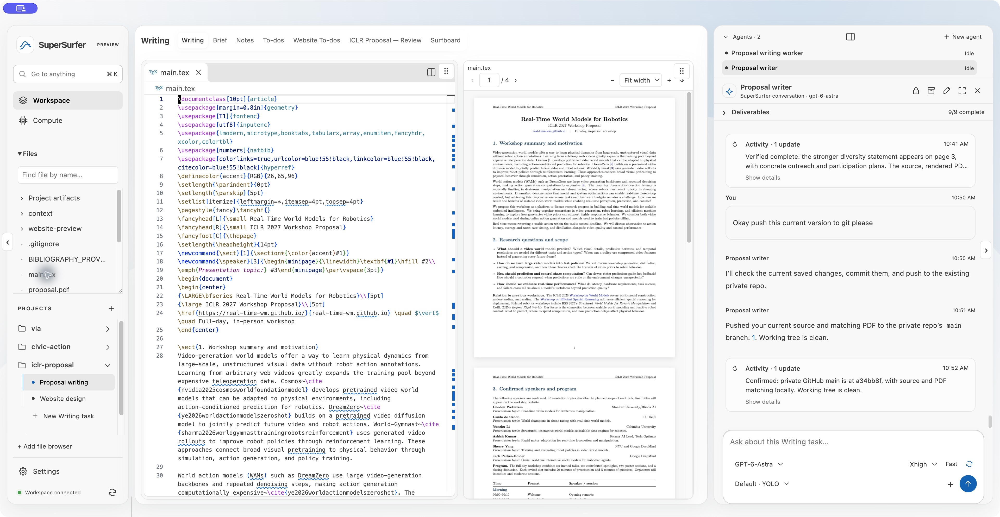
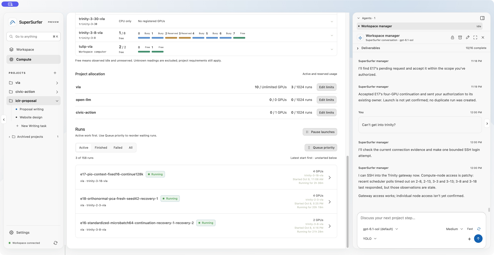
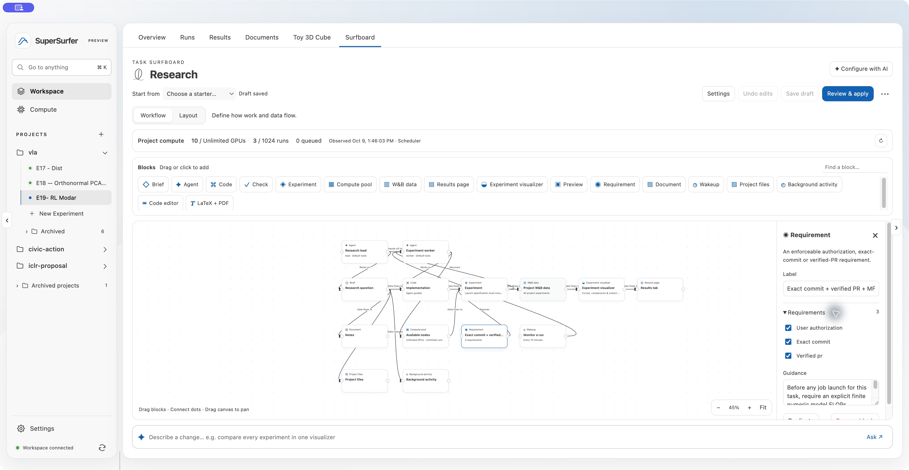

Super Surfer
Fully customizable.
Open-source AI workspace.
Your editor, agents, experiments, and papers.
A workspace you can shape around the way you actually work.
VS Code backend & extensions · LaTeX builds · GPU queues · Agent workflows
From my daily work on tulip
This is my workspace.
Explore my real experiment curves and research code. Shape the agent workflow on a Surfboard, then see how your choices change the workspace.
The curves I work with.
Loading the recorded experiment histories…
Run identities, timestamps, and data
Histories are sampled by the existing W&B integration, with recent tail observations merged. No generated points or synthetic evaluation scores. With smoothing enabled, raw observations remain visible beneath the moving average.
Download this numerical snapshot ↓Opening the real source file…
vla-simple · E18 worktree e18/sr400-orthogonal-20261008 · revision 111c287. Edits stay in this preview. Original file ↓Source, build, and the paper beside it.

My main.tex in the VS Code backend, the compiled four-page PDF, and the writing conversation. The recorded agent checks the bibliography, rebuilds the PDF, and verifies the rendered pages.
This view is a recording of the real build workflow.The queue behind the research.

Measured W&B histories and original research source. The editor and Surfboard are interactive local examples; original app captures document the VS Code backend, extensions, LaTeX builds, and GPU queues.
Browse the original workspace captures
Surfboards
Keep your agents in line.
Define who owns the work, which tools they can use, what must pass before launch, and when they should check back. Make that workflow visible—and change it as the research changes.
Your workflow. Your boundaries.
“Only allow jobs to be launched when mfu is specified”
My research board carries that instruction alongside the existing requirements for authorization, an exact commit, and a verified PR.
Set the requirements.User authorization, exact source, and PR verification before execution.
Give each agent a job.The research lead hands off to an experiment worker. The manager owns launches.
Bound the work.Compute pools, checks, recovery guidance, and monitoring belong to the workflow.
Choose what comes back.Connect W&B data to a visualizer, results, documents, or your own view.

The first three requirements are built-in controls. My MFU estimate rule is an agent instruction checked by the manager, not a scheduler-native MFU gate.
Build the workspace around your work
Keep the tools you rely on.
Make the rest yours.
Your editor. VS Code’s backend, your theme, your keybindings, and installed extensions.
Your research. Queued GPU jobs, real metrics, custom visualizations, source, and artifacts.
Your agents. Cursor, Codex, or Claude, with explicit roles, instructions, and requirements.